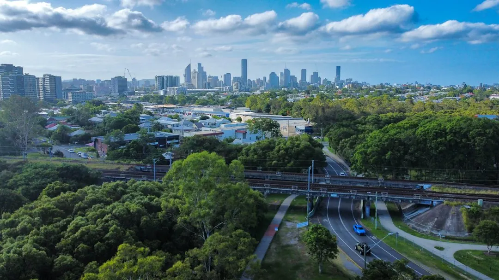

Retaining wall repairs in Brisbane should begin with the wall's movement, drainage, height, retained load and access, not with a replacement material. Brisbane City Council's listed exemption conditions include a wall and retained fill or cut no higher than 1 metre, no surcharge loading, at least 1.5 metres from a building or another retaining wall, and no pool-barrier function. If any condition differs, ask about certification, engineering and approval before work starts.
For homeowners comparing retaining wall repairs brisbane options, the useful starting point is identifying movement, water pressure, retained loads and the approval pathway before selecting a repair method.
Retaining Wall Repairs Brisbane Explained
Brisbane Retaining Walls asks people describing a wall problem to include the suburb, wall height, material, access, nearby structures and drainage signs. That information helps frame whether the next conversation concerns a repair, replacement, drainage diagnosis or a quote.
Look at the wall from both the lower and upper sides. Leaning, bulging, wet soil, blocked weep holes and washed-out backfill point to questions beyond a damaged sleeper or cracked face. A replacement board may not address failed posts, unstable retained ground or water pressure.
For an older cut-and-fill yard, steep side path or site affected by stormwater, record where water runs and how materials could be carried or unloaded. Driveways, house pads, fences, pools, nearby walls and other loads can change the scope even when the visible wall appears modest.
Choose the repair or replacement pathway
The material is a design decision, not just a finish choice. Concrete sleepers with steel posts may suit a tidy, long-service-life wall where planned drainage is part of the work. H4 treated timber sleepers may suit a lower garden edge or a replacement that follows an older yard arrangement.
Core-filled besser block walls can support rendered finishes and tight boundaries, while rock and boulder walls depend on stone selection, batter and drainage. Gabion baskets create a heavy textured face and can suit free-draining terraces or garden edges. The site, retained soil, access and nearby load should decide which option is assessed.
- Ask whether the existing posts, sleepers, blocks and base remain sound.
- Ask how subsoil water will be collected and where the outlet will discharge.
- Ask whether the proposed repair changes the wall height, boundary position or retained load.
- Request the material, drainage, design, access, price and availability in writing.
Check approval conditions before removal
The published Brisbane guidance says building approval is not required only when every listed condition fits: the wall plus retained fill or cut is no more than 1 metre, there is no surcharge loading, the wall is at least 1.5 metres from a building or another retaining wall, and it is not part of a pool fence. Height alone is therefore not a complete approval test.
Use a site checklist before accepting a repair scope:
- Is a driveway, house, pool, shed or another wall above the retained area?
- Is the wall within 1.5 metres of a building or another retaining wall?
- Does the wall form part of a pool barrier?
- Where will subsoil water legally discharge?
If one condition does not fit, ask whether a private certifier, RPEQ engineer or contractor needs to explain the next pathway before work begins. A project in Brisbane may involve planning approval, building approval, filling and excavation questions, or a council-approved engineered system depending on the site.
Prepare a quote that can be compared
A useful quote should describe the wall rather than simply name a material. Include the approximate height, retained soil, visible movement, drainage symptoms, access route, nearby structures and whether the work is a local repair or full replacement. Photos can be provided later if the responding provider requests them, but written site details are still useful at the enquiry stage.
Compare proposals by asking what is included in excavation, removal, temporary ground control, posts or reinforcement, drainage, outlets, spoil handling and reinstatement. Also ask which items remain subject to site inspection. A low initial figure may not describe the same scope as a proposal that includes drainage diagnosis or an engineered pathway.
For a timber wall, ask whether deterioration is limited to one sleeper or extends into posts and retained ground. For bowing sleepers or blockwork, ask what caused the movement and how surrounding bays will be assessed. The repair decision should explain the cause being addressed, not only the visible defect.
For a second perspective on related home improvement decisions, see the companion guide to Brisbane retaining wall repair questions.
Who this guide applies to
This guide is for Brisbane and South East Queensland property owners assessing a leaning, bowing, decaying or drainage-affected retaining wall, as well as people planning a replacement or new wall near a driveway, building, pool, fence or neighbouring level.
It is also useful for anyone comparing concrete sleeper, timber sleeper, besser block, rock, boulder or gabion approaches. It does not determine whether a particular site is compliant or whether a contractor is available. Those decisions require the exact ground, load, access, drainage and approval circumstances to be checked in writing.
- Record the wall. Note the suburb, approximate height, material, access route, nearby structures and visible movement or drainage signs.
- Trace the ground. Describe what is retained above the wall, where water travels and where materials can be unloaded.
- Check approval triggers. Compare the site with the listed height, surcharge, separation and pool-barrier conditions.
- Compare written scopes. Ask each contractor to state the repair method, drainage work, materials, exclusions and approval pathway.
| Site clue | Question to ask | Possible pathway |
|---|---|---|
| Leaning or bulging face | Are posts, sleepers or retained ground moving? | Repair assessment, temporary control or replacement review |
| Wet soil or blocked weep holes | How will water pressure and outlet discharge be addressed? | Drainage diagnosis or subsoil system planning |
| Driveway, pool, building or wall nearby | Does surcharge, proximity or a barrier affect approval? | Certifier, engineer or approval-aware scope |
| Rotten timber or damaged base sleeper | Is deterioration isolated, and are supports sound? | Local replacement or broader wall replacement |
Common questions
Can a bowing retaining wall sleeper be replaced on its own? Only a site assessment can establish whether the sleeper is the cause or a symptom. Posts, surrounding bays, retained ground and drainage should be considered before removing a board.
When might a timber retaining wall need replacement? A local repair may be possible where decay is limited and supports remain sound. Widespread rot, failed posts or persistent wet backfill can make replacement more appropriate.
Does a wall under one metre always avoid building approval? No. The published conditions also address surcharge loading, separation from buildings or other walls, and pool-barrier use. All listed conditions need to fit.
What should I tell a contractor about a Brisbane wall? Provide the suburb, height, material, access, nearby structures, retained load and any leaning, bulging, wet soil, blocked weep holes or washed-out backfill.
Which wall material is best for a sloping site? There is no universal choice. Drainage, batter, stone or block selection, retained soil, access and any engineering or approval requirement should be assessed for the exact site.
This guide covers Brisbane retaining wall assessment, repair and replacement decisions, drainage questions, quote inputs and approval-aware checks.